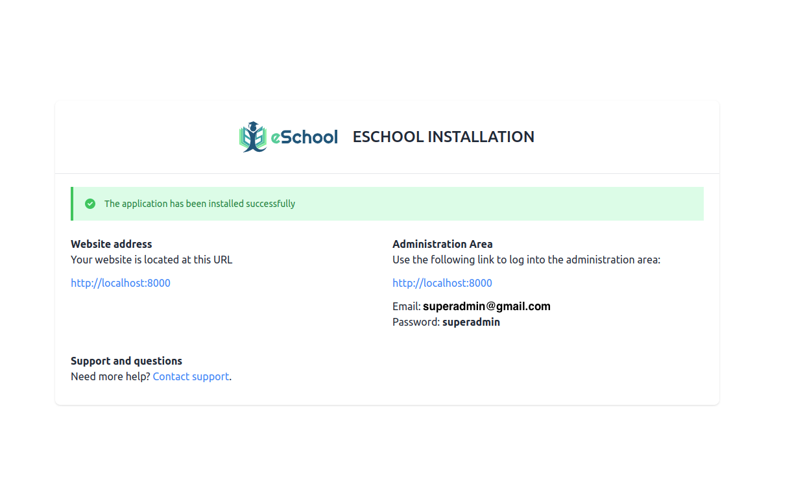
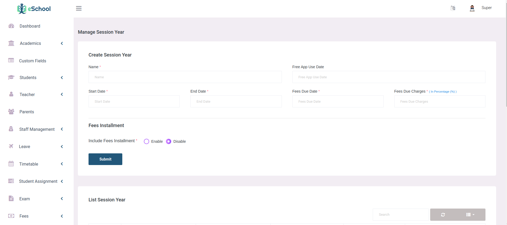
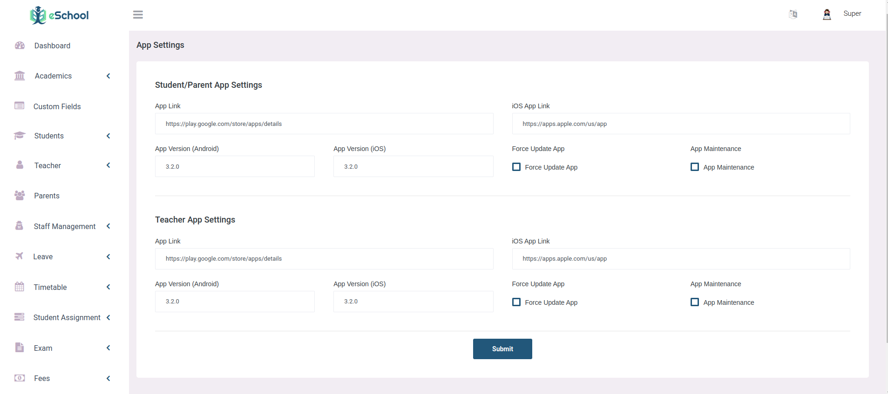
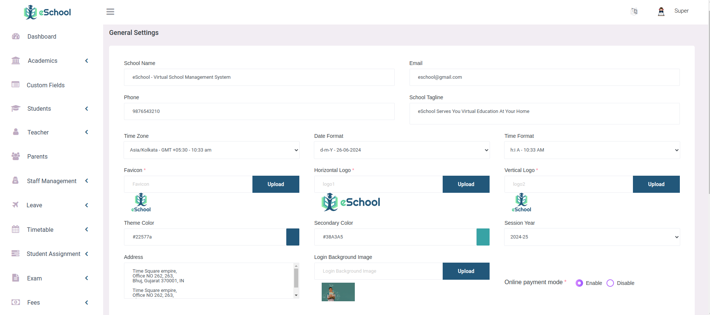
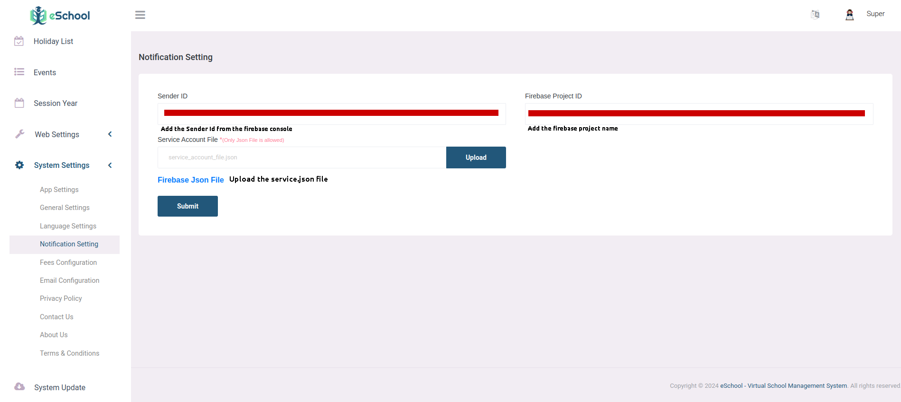
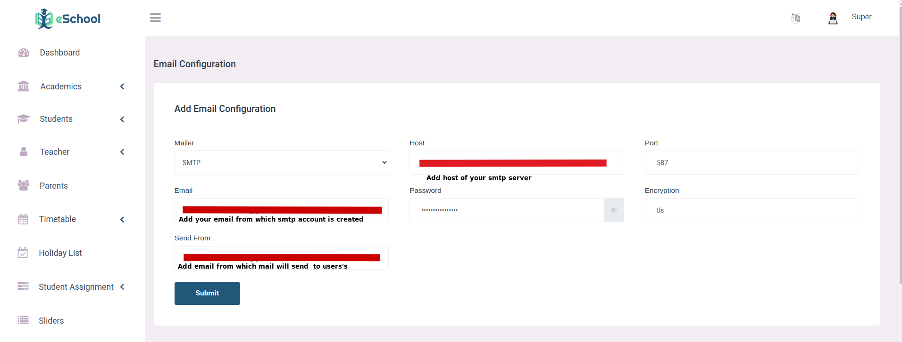
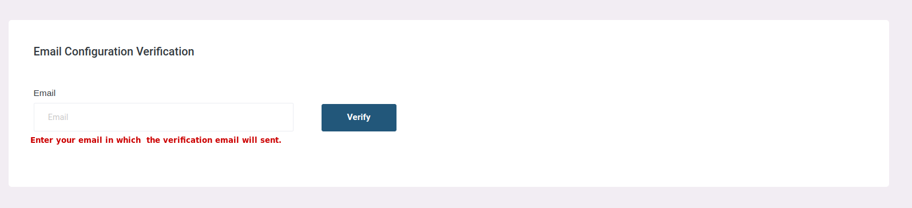
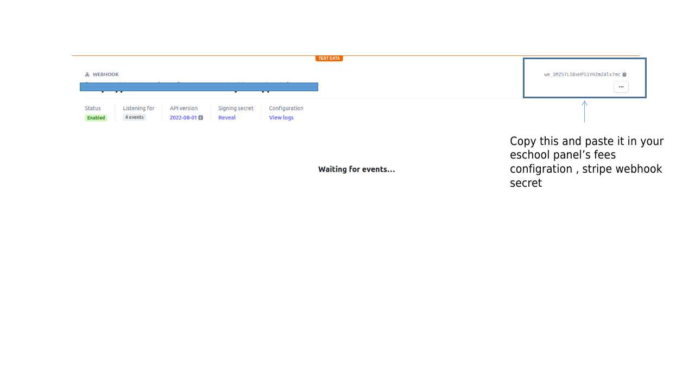
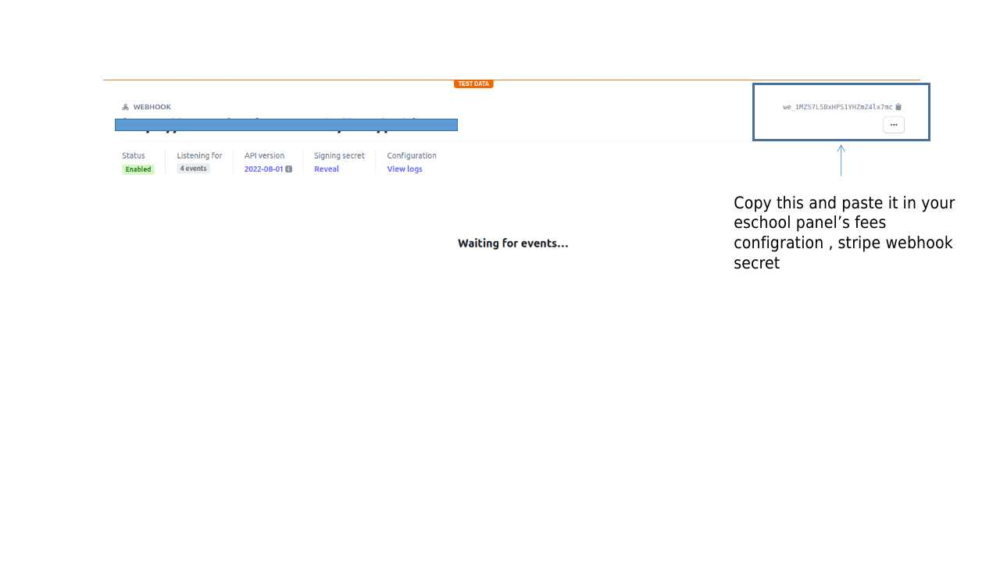
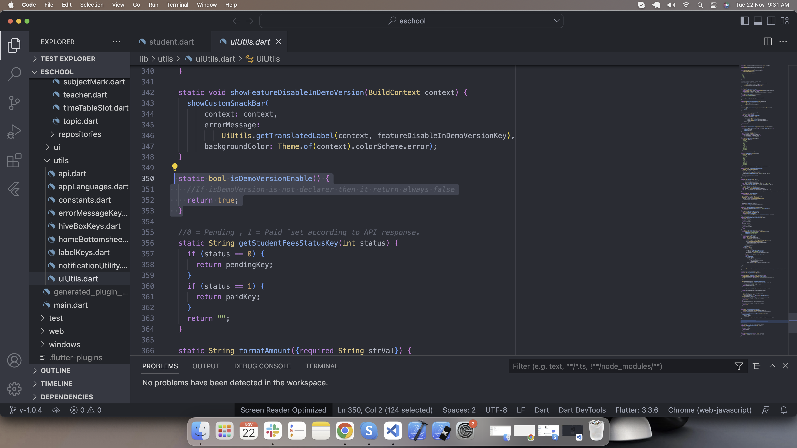

e-School
Documentation
By : WRTeamEmail : wrteam.priyansh@gmail.com
Thank you for purchasing e-School. We appreciate your support. In this documentation, you will find instructions on how to set up the admin panel and mobile application for e-School. This document also provides features of e-School. If you have any questions, feel free to reach out. Thank you for choosing e-School!
Setup Admin Panel
Prerequisite
Eschool Admin panel is built using Laravel Framework 9.14.1 so you need PHP version upto 8.1.0 version installed on your server.
Upload Admin Panel code on server
1. Unzip the code you will see the Admin Panel inside the zip.
2. Upload this folder content on your server in public_html folder.
3. After uploading visit your domain url. You will see the installation wizard.Follow the instructions.
Installation Steps
1. Installation Screen

2. Server Requirements & Extensions
If PHP version is lower than 8.0 or any extension is not installed then it will be highlighted using Red color. So you need to make sure that your server meets the all requirement.

3. Permission Screen
Make sure this folder have read & write permissions. If not then assign this folders read & write permissions.

4. Database Configuration Screen

5. Database Connection Status

6. Final installation Screen
If everything is configured successfully then your Admin panel has been installed successfully.You can login as Super Admin using the credentials provided here.
Addtional Configurations (Admin Panel)
After Installation you need to setup some settings before using the system.
1. Session Year
Set your Current & upcoming session years here, So you can manage studens by session year
2. App Settings
This settings will be used by your Flutter APP.
3. General Settings
This settings will be used by Admin Panel.You can set your current session year here.
4. FCM Server Key
FCM Server key will be used for APP notifications.
5. Email Configurations
Send Email configurations so that system can send emails to registered users.
6. Fee payment Configurations
Set razorpay and stripe credentials. At a time only one payment gateway will be enable
7. Payment Gateway's Webhook Configration

1. Webhook Configration for Razorpay


2. Webhook Configration for Stripe


 

Setup flutter
Setup flutter in your system
-
Visit flutter official website : https://docs.flutter.dev/get-started/install
for full install guide.
If you prefer video tutorials, we recommend this playlist for the full installation process
https://www.youtube.com/playlist?list=PLSzsOkUDsvdtl3Pw48-R8lcK2oYkk40cm
Change package name
- Unzip the downloaded code. After unzipping you will have E-School - Flutter Code zip folder. Unzip that folder and open it in Android Studio or Visual Studio Code.
-
Open ide terminal go to your project path and execute command
flutter pub get
-
If you are running this app for ios then run these following commands in terminal.
cd ios
pod install
cd ..
-
Change package name of android app
Execute this command in your terminal
flutter pub run change_app_package_name:main your_new_package_name

-
Change package name of ios app
Open ios folder of this project in xcode. Go Select Runner->Targets->General->Identity and enter new package name in Build Identifier.

Integrate with firebase
-
Create firebase project in your account


-
Add andorid application to your firebase project

Download the google-service.json file and add in this folder android/app/


-
Add ios application to your firebase project

-

Download GoogleService-Info.plist and add in this folder ios/Runner/

-
Please configre this settings in-order to send ios notifications.
https://firebase.flutter.dev/docs/messaging/apple-integration
-
You have configured firebase in your project successfully
Integrate with admin panel
Go to lib/utils/constants.dart and replace the baseUrl with your admin panel url.

Change app logo
For Android, open android > app > src > main > res and add here your logo according to device screen size

For IOS open ios > Runner > Assets.xcassets > AppIcon.appiconset here and add your logo according to diffrent size.

Change app name
For Android, go to android/app/src/main/AndroidManifest.xml and change the app name as shown in image. Replace the selected eschool text with your school name

For IOS open this project in xcode and enter your app name in display name field as shown in image.

Run this app
Go to lib/utils/uiUtils.dart and return false for isDemoVersionEnable() function.

Now we have setup all the necessary things it's time to run this app.
Open your terminal, navigate to your project path and execute the following command to run this app
flutter run
Change app theme
Go to lib/ui/styles/colors.dart and set your theme colors

Change font in app
-
Go to lib/app/app.dart and add your font as shown in image.

-
Go to assets/google_fonts/ and add .tff files of fonts.

Change language in app
-
By default,default applicaiton language is english. If you want to change default language go to lib/utils/appLanguages.dart and add your respective language's code shown in below image. Get your language code from here https://developers.google.com/admin-sdk/directory/v1/languages.

-
If your default language code is not in app language list add language details in list as shown in below image. Go to lib/utils/appLanguages.dart

-
If your default language is not in assets/languages/[language-code].json then create new file in same folder with [language-code].json. Add all the labels from en.json and convert label values in your respective language

-
Copy all the labels form en.json file in your [language-code].json file.

-
If you want to add new language then follow the steps 2,3 and 4.
Generate release version
How to generate release version of this product
-
To generate release android app-bundle and publish to playstore follow https://flutter.dev/docs/deployment/android
-
To generate release ios apk and publish to appstore follow https://flutter.dev/docs/deployment/ios
Academics
Mediums and Sections
The Academics feature in e-School allows the admin to define the mediums (languages) in which the school operates, such as English, Hindi, and Gujarati. Additionally, the admin can create sections for classes, such as A, B, C, and so on.
Stream and Shifts
Streams are used to divide classes based on subject preferences, such as Arts, Commerce, or
Science. By creating streams, schools can offer specialized education and personalized learning
experiences.
Shifts are utilized to organize classes into different time-zones, like Morning or Afternoon, to
accommodate students' schedules. With shifts, schools can efficiently manage classroom
capacities and balance student-teacher ratios.
Subjects
The admin can create new subjects within e-School. Each subject can be associated with one of the mediums and has a name, type (theory or practical), optional subject code, custom background color, and image to be displayed in the application. This allows for easy organization and identification of subjects across different classes.
Class
In e-School, the admin can add classes by choosing the mediums and sections that each class will have. For example, selecting English as the medium and A, B, C as the sections will automatically create classes like 10 A English, 10 B English, and 10 C English. Similarly, selecting Gujarati as the medium and A, B, C as the sections will create classes like 10 A Gujarati, 10 B Gujarati, and 10 C Gujarati. Optionally a shift can be choosen for any class to indicate the time-zone it'll be taken on. There is also an option of sub-dividing classes into streams based on student's subject preference.
Class Assign Subject
Each class can have one or more core and elective subjects assigned to it. The admin can assign subjects to specific classes based on the curriculum requirements. This ensures that students in each class have access to the appropriate subjects for their academic journey.
Assign Class Teacher
Teachers can be assigned as class teachers for one or more classes. The class teacher plays a crucial role in overseeing the overall academic progress and discipline of the students in a particular class. One teacher can be class teacher of multiple classes. The class teacher can use features like attendence to take attendence of students in their class and giving offline exam Marks to the students in their class who has given the offline exam.
Assign Subject Teacher
Teachers are chosen to teach different subjects based on their expertise and qualifications. The admin can assign subject teachers to specific subjects across different classes. This ensures that students receive instruction from teachers who specialize in the respective subjects, enhancing the quality of education.
Assign New Student Class
The admin can use the this feature to assign a new student to a specific class and class section. This feature allows for easy management of student enrollment and ensures that each student is allocated to the appropriate class and section within the school.
Promote Student
The promote student feature allows for the seamless promotion of students from one class to another at the end of the academic year. This simplifies the administrative process and ensures that students progress to the appropriate next level in their education.
Student
Student Admission
The Student Admission section in the e-School web panel allows administrators to add new students. They can provide details such as the student's first and last name, gender, profile image upload, class and category selection, caste, religion, blood group, height, current and permanent addresses. Additionally, administrators can add information about the student's mother and father, including their first names, last names, mobile number, profile image, email addresses, date of birth, occupations, and genders. An optional guardian can also be added, including similar details.
Parents Management
The Parents Management section in the e-School web panel provides administrators with the ability to view and modify the data of all parents associated with the students from the school. This tab serves as a central hub for managing parent information, ensuring effective communication and accurate records.
Student Roll Number Assignment
The Student Roll Number Assignment feature enables administrators to assign custom roll numbers to students in any class. This functionality simplifies the management and organization of student records within the e-School system.
Student Details Management
The Student Details Management section allows administrators to view, edit, or delete student information. This page provides convenient access to student records for necessary updates or modifications.
Student Category Management
The Student Category Management feature allows administrators to manage student categories within the e-School system. This includes creating categories such as general, OBC, ST, SC, or any other relevant categories, and assigning them to students as needed.
Reset Password
The Reset Password feature enables administrators to reset a student's login password for the e-School application. By using the student's unique GR number, administrators can modify the login password, which is required for the student to access the e-School application. The default username is the GR number, and the default password is the student's date of birth.
Add Bulk Student Data
The Add Bulk Student Data feature allows administrators to add a large number of students by uploading a CSV file in a specific format. Administrators can download a dummy file with the required format using the "Download Dummy File" button. This functionality streamlines the process of importing student data into the e-School system.
Teachers
The Teachers screen in the e-School web panel allows administrators to manage teachers within the school. From this screen, administrators can create new teachers by filling in details such as first name, last name, gender, email, mobile number, optional profile image, date of birth, qualification, current address, and permanent address. Additionally, administrators have the option to grant teachers permission to manage student and parent data, enabling them to perform these tasks from their own panel or app.
Once a new teacher is created, they can log in using the web panel with their email and password (with the default password being their date of birth). Alternatively, teachers can also log in using the teacher app, which provides access to teacher-specific features based on their permissions and assigned classes. Class teachers may have additional actions available to them, such as taking attendance for their assigned students.
Teacher Panel Features:
- Timetable
- Holiday List
- Lesson and Topic
- Student Assignment
- Attendance
- Announcement
- Online and Offline Exams
Special Permissions:
In addition to the listed features, teachers can have permission to manage student details and parent data. With these special permissions, teachers can view and update student information, as well as manage parent details. This allows teachers to have a more comprehensive understanding of their students and parents details.
Timetable
Create Timetable
The admin can create the timetable for each class section from Monday to Sunday. They need to select the subject, teacher, starting time, ending time, and can add an optional note to create a timeslot on a specific day of the week in the timetable for a class section.
Class Timetable
In the Class Timetable section, both the admin and teachers can view the timetable specific to each class. This provides a comprehensive overview of the schedule for a particular class, allowing teachers and administrators to plan and prepare their lessons accordingly.
Teacher Timetable
In the Teacher Timetable section, the admin can view the timetable for any teacher. This allows the admin to have visibility into the schedule of each teacher within the school. Additionally, teachers themselves can access their own timetable to keep track of their assigned classes and time slots.
Holidays
The admin can manage holidays from this section. To create a holiday, the admin needs to choose a date, title, and an optional description. This allows the admin to schedule and organize holidays effectively within the school calendar.
Teachers can view the holidays from their panel, providing them with visibility into the scheduled holidays. This helps teachers plan their lessons and activities accordingly.
Holidays will also be displayed to students and parents in the applications, appearing in the calendar. This ensures that students and parents are aware of upcoming holidays and can plan accordingly.
Sliders
The admin can create sliders from this screen, allowing them to showcase images on the application's home screen. These sliders serve as visual highlights and can be used to display various topics or important information to everyone.
The admin have the ability to edit or delete existing sliders, providing flexibility in managing the displayed images. This feature allows for effective customization and presentation of relevant content to users.
Sliders can be utilized to showcase a range of topics in the eSchool app, such as:
- Upcoming Events and Activities
- School Achievements and Awards
- Important Announcements
- Featured Programs or Courses
- School Facilities and Resources
Announcements
Announcements can be managed from this screen by both teachers and admins. It allows for effective communication and dissemination of important information within the school community.
To create an announcement, the title is mandatory. Additionally, admins and teachers can add a description and attach multiple files to the announcement, providing detailed information and additional resources if needed.
These announcements can be assigned to the notice board by the admin, ensuring that they are prominently displayed for everyone to see. Teachers can also assign announcements to their respective class sections, enabling targeted communication with specific groups of students.
Students will be able to see these announcements in the application, which can help the school's principal and teachers to:
- Share important school-wide news and updates
- Communicate changes in school policies or procedures
- Inform students about upcoming events, competitions, or workshops
- Provide resources and study materials for specific subjects or topics
- Announce academic achievements, awards, or recognition
- Remind students about assignment deadlines or exam schedules
- Promote community service opportunities or extracurricular activities
- Share safety guidelines and emergency protocols
- Celebrate special occasions and foster a sense of community
Attendance
Add Attendance (Teacher Panel Login)
Class teachers can take attendance for students in a class, either for today or for a specific date, from this section.
View Attendance (Teacher Panel Login)
Teachers can view the attendance of a specific class. They can filter it by present, absent, and holiday types, as well as by date. Additionally, a download feature is available to export the attendance data.
Lessons and Topics
Create Lesson (Teacher Panel Login)
Teachers can effectively manage lessons for students in a specific class section and subject. When creating a lesson, teachers will see their class sections and subjects available for selection.
They can then provide a name and description for the lesson and even have the option to add multiple files to complement the lesson. Once created, these lessons will be visible to students from the respective class section and subject within the application.
Students can easily download and access the files attached to the lesson to enhance their learning experience.
Create Topic (Teacher Panel Login)
Teachers can manage topics from this section. Each lesson can have multiple topics, and teachers can create them by selecting the appropriate class section, subject, and the associated lesson.
When creating a topic, teachers can provide a topic name and description, and optionally select relevant files to enrich the content.
Students will be able to view these topics within their lessons through the application, providing a well-organized and structured learning experience.
Online and Offline Exams
Create Exam
Exams can be managed by the admin from this screen. They can create exams by providing an exam name, selecting the session year, choosing one or more classes, and adding an optional exam description. The admin has the ability to edit, delete, and publish results for exams.
Create Exam Timetable
The admin can create the timetable for exams using this screen. They can select an exam, a class, a subject, total marks, passing marks, starting time, ending time, and date. Students will be able to see the exam schedule in the app, but the exams will be conducted offline on the campus.
Exam Grade
From this page, the admin can create a grading system for exam percentages. They can define grade ranges based on percentage values, such as 0 to 35 = F, 36 to 50 = D, and so on. This allows for consistent and standardized evaluation of exam results.
Upload Exam Marks (Teacher Panel Login)
Teachers can use this feature to enter and upload marks for students who have taken the exam. They can input the marks obtained by students for each exam.
Student Exam Result (Teacher Panel Login)
Teachers can view and manage the results of students' exams here. This feature provides access to exam results on a student-by-student basis, allowing teachers to track and analyze performance.
Manage Online Exam (Teacher Panel Login)
Teachers can efficiently manage online exams for different classes from this section. They have the flexibility to select the class section, subject, and fill in the exam title, along with a secret exam key that students will use to join the exam. The duration, in minutes, can be specified to allow students to answer the online exam questions within a defined time frame.
Additionally, teachers can set the starting date and ending date for the online exam. Once created, these exams will be accessible to students during the scheduled period. Furthermore, the marks will be automatically calculated based on the questions added to the exam, streamlining the assessment process.
Manage Questions (Teacher Panel Login)
In this section, teachers can efficiently manage questions for various classes and subjects. They have the option to create two types of questions: simple questions and equation-based questions.
For simple questions, teachers can provide textual questions, along with multiple textual options and indicate the correct answer. Additionally, they can optionally include images and notes to enhance the question's context and clarity.
On the other hand, equation-based questions offer an HTML editor and various features to seamlessly integrate mathematical equations within the question and its options. Once created, teachers can add these questions to specific exams, associating them with the relevant subjects.
Terms & Conditions (Teacher Panel Login)
Teachers can customize and add their own terms and conditions for exams through the text editor provided in this section. Students must agree to these terms before attending the exam via the application.
Assignments
Create Assignment (Teacher Panel Login)
Teachers can create assignments for their class sections on a particular subject. When creating an assignment, teachers must provide a name and submission date for the assignment.
They can also add detailed instructions and files to provide students with additional information and resources. Moreover, teachers can specify the points that students can earn by submitting the assignment.
Furthermore, teachers have the option to allow resubmission of rejected assignments. In such cases, they must specify the extra days allowed for resubmission.
Students from the class section to which the assignment was assigned will see these assignments in the application. They can upload their files and submit the assignment to the teacher through the app.
Assignment Submission
Admin and Teachers can view the submitted assignments in this section and accept or reject the submissions.
They also have the ability to provide feedback and assign points to the submitted assignments.
Students will be able to see the feedback and updated status of their submitted assignments in the "Submitted Assignment" section of the application.
Fee Payment
Fees Configuration
To utilize the fees feature with online payment, administrators must complete this form by providing their payment gateway details such as Razorpay or Stripe. Additionally, they need to specify the currency code and symbol for the payments.
Session Year
Parents can pay their students' fees only for the current session year. Each student can be assigned to a particular class in a session year and a different class in the subsequent session year. In this section, administrators can create new session years and manage existing ones.
When setting up a session year, administrators need to enter its name, starting date, ending date, fees due date, and fees due charges (in percentage). Optionally, administrators can enable installment fee payments and set up one or more installments with names, due dates, and due charges (in percentage).
These dates and charges will be applicable to students paying their fees in the current session year. Administrators can designate the current session year from the general settings in the system configuration.
Fees Type
Administrators can create various types of fees from this section, such as exam fees, gym fees, sports fees, and more. Each fee type can have a title and description to provide additional context.
Assign Fees Classes
Administrators can assign different types of fees to specific class sections in this section. These fees can either be optional or non-optional, and their amounts can vary for each class section.
For instance, sports fees could be $90 for Class 9A and $200 for Class 12B. Administrators can customize the amounts for individual fee types according to each class.
Fees Paid
Administrators can view the fee payment status of all students from various classes in this section. If students and parents are making payments directly to the admin/principal using cash or cheque, the admin can record those payments in the compulsory/optional fee payment section.
Furthermore, administrators have the convenience of downloading PDF receipts for fees that have already been paid.
Fees Transactions Logs
This section displays logs of all fees transactions. Administrators can access detailed information about each transaction related to fees.
Fees Online Payment (Parent Login eSchool App)
Parents can conveniently pay their student's current session year fees online through the application. In the student options -> fees section, they can access information about all session years where fees have been paid and download receipts for their records.
Parents have the flexibility to pay pending fees for the current session year. They can either make full payments for compulsory fees or, if installment options are enabled, pay one or more installments. Additionally, they can pay optional fees at any time without concerns about due charges.
In the settings -> fees transaction option, parents can review all fee payment transactions, including the amount and status of each payment made.